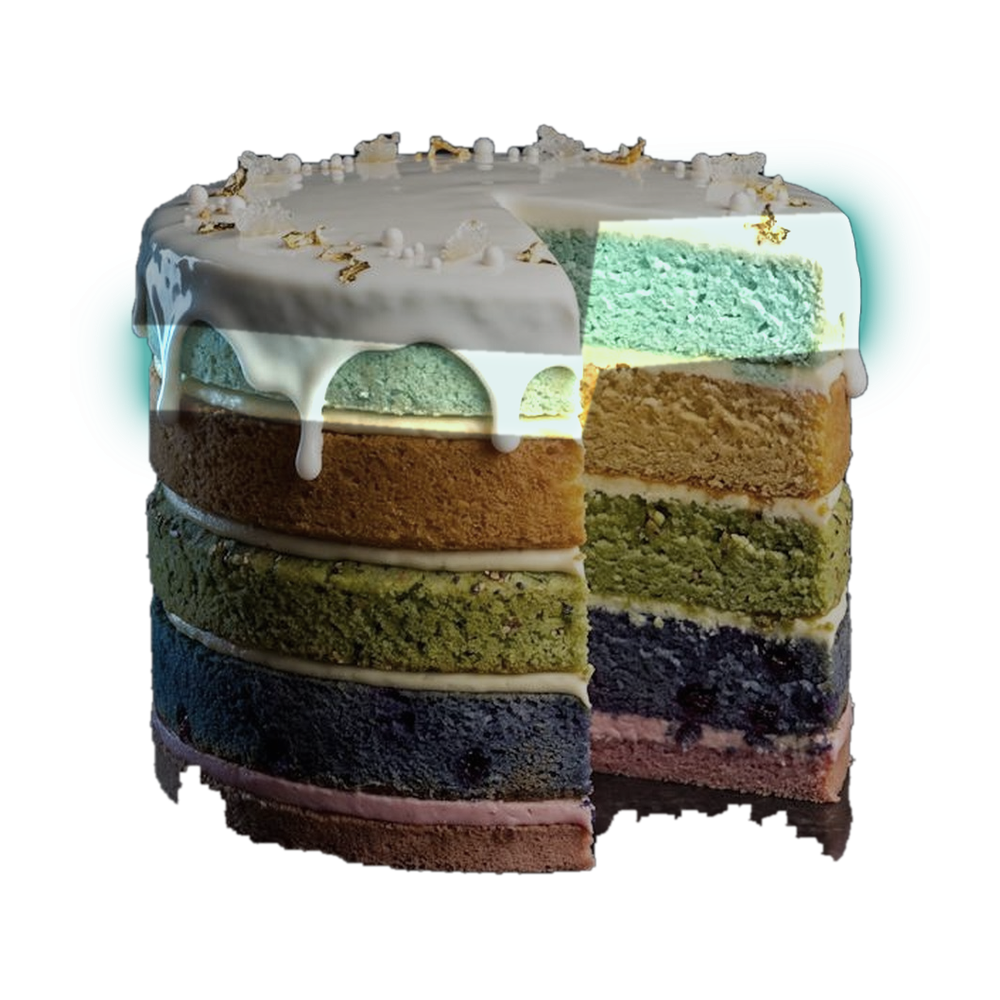

Layer four: stress
The layer people skip.
Elevated cortisol undoes the diet, the weights and the steps from the inside
Six months of daily meditation and my curve was normal again
The physiological sigh
Two short inhales through the nose, one long exhale. Five minutes a day, zero dollars

17 / 21
Balban, Cell Reports Medicine 2023
